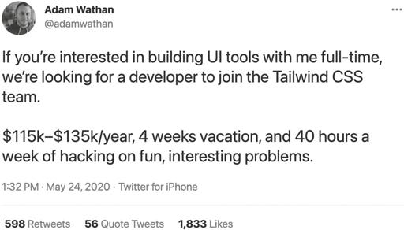

Whenever I have to decide what to do next, I ask myself the question Gary Keller poses in The One Thing: “What’s the one thing you can do such that by doing it everything else will be easier or unnecessary?”
每当我需要决定下一步该做什么时，我都会问自己加里·凯勒在《唯一的事情》中提出的问题：“你能做的唯一一件事是什么，通过做这件事，其他一切都会变得更容易或不必要？”
That’s why in this book we’ve focused on community before process, process before product, sales before marketing, and marketing before growth.
这就是为什么在本书中，我们专注于社区优先于流程，流程优先于产品，销售优先于营销，营销优先于增长。
When it comes to the people in your company, the answer to Keller’s question is to focus on culture before hiring. Before you’re ready to hire anyone, you first need to make a company people want to work for. That begins with setting your values, preferably as early as possible, because values are the foundation of the culture you will build together with your employees.
当涉及到公司中的人员时，回答凯勒问题的方法是先关注文化再招聘。在你准备好招聘任何人之前，你首先需要打造一个人们想要工作的公司。这始于设定你的价值观，最好尽早进行，因为价值观是你将与员工共同建立的文化的基础。
I used to think that communicating company values was kind of dumb, to be honest. Be nice, work hard, show up on time—isn’t it obvious? Then I started Gumroad and realized that if you don’t constantly remind everyone—including yourself—what you do, how you do it, and why you do it that way, you will veer off course. And then you’ll have to make corrections, usually at the most inopportune time.
说实话，我曾经认为传达公司价值观有点愚蠢。友善、努力工作、准时到达——这不是显而易见的吗？然后我创办了 Gumroad，意识到如果你不不断提醒每个人——包括你自己——你做什么、怎么做以及为什么这样做，你就会偏离轨道。然后你将不得不进行修正，通常是在最不合时宜的时候。
For me this happened in the fall of 2014, when I first started having conversations with VCs about the next round of funding for Gumroad. When I realized that it wasn’t going to be easy, if at all possible, to raise our Series B round of funding, I had to realign several team members around a very different kind of culture—one focused on building a profitable, sustainable business rather than a unicorn. We didn’t shift our priorities—we were and still are creators first—but our new focus required me to have conversations around the career trajectory some of our employees expected. And let me tell you, it’s a lot more difficult, emotional, and expensive to fix your culture than your code.
对我来说，这发生在 2014 年秋天，当时我第一次开始与风险投资公司谈论 Gumroad 下一轮融资。当我意识到要筹集我们的 B 轮融资并不容易，甚至可能根本不可能时，我不得不让几位团队成员重新调整到一种非常不同的文化上——一种专注于建立一个盈利的、可持续发展的企业，而不是一个独角兽。我们没有改变我们的优先事项——我们过去和现在都是以创作者为先——但我们的新重点要求我与一些员工预期的职业轨迹进行对话。让我告诉你，修复你的文化比修复你的代码要困难得多、情感上更复杂、成本更高。
Humans are not computers. We are all unpredictable, emotional creatures. Each person you hire makes the matrix of interactions within your organization more complex. You will make mistakes, but your company values will give you a plan of attack for how to get back on track.
人类不是计算机。我们都是不可预测的、情感丰富的生物。你雇用的每个人都会使你组织内的互动矩阵变得更加复杂。你会犯错误，但你的公司价值观会为你提供一个回到正轨的计划。
Today, forty-eight people work on Gumroad, based all over the world, and they seem quite happy! But I had my fair share of ups and downs to get here. In this chapter, I’ll share everything I’ve learned the hard way about hiring the right people at the right pace and keeping them happy and productive in the face of a never-ending barrage of lucrative and glamorous offers for their talent, particularly in the technology space. I also address the challenges and opportunities of remote work and other unconventional approaches to solving problems with people. It’s an ongoing process that never really stops.
如今，Gumroad 有四十八名员工，分布在世界各地，他们似乎都很开心！但我经历了不少起伏才走到这一步。在本章中，我将分享我在艰难过程中学到的关于以合适的速度招聘合适的人，并在面对无休止的高薪和光鲜的工作机会时，如何让他们保持快乐和高效，尤其是在技术领域。我还会讨论远程工作和其他非常规方法在解决人与人之间问题时的挑战和机遇。这是一个永不停歇的过程。
Before you invite anyone over, you need to get your house in order. I’ve never seen a house party end cleaner than when it started, and a company is a house party that never ends. So let’s get started figuring out what kind of house you want to live in and then filling it with the awesome people who are going to come along with you on this journey.
在邀请任何人来之前，你需要先整理好自己的房子。我从未见过一个派对结束时比开始时更干净，而公司就像一个永不结束的派对。所以让我们开始弄清楚你想住在什么样的房子里，然后用那些会和你一起踏上这段旅程的优秀人才来填满它。
Define Your Values Early and Often
提早并经常定义你的价值观
Values are not generic two-word commandments that companies use to state the obvious. Quite the opposite: They’re for stating the non-obvious, in non-obvious ways. They codify what you believe, putting it in a place where everyone can see—and everyone can suggest changes.
价值观不是公司用来陈述显而易见的事情的通用两字命令。恰恰相反：它们是用不显而易见的方式陈述不显而易见的事情。它们将你的信念编纂成文，放在一个每个人都能看到的地方——每个人都可以提出修改建议。
Values are oral tradition. They tell employees a story of how to behave in both everyday and extreme situations. And they’re more efficient mediums of information than manuals and handbooks. That’s because good values stick in the brain; they’re efficient and memorable.
价值观是口头传统。它们向员工讲述如何在日常和极端情况下表现的故事。而且它们比手册和指南更高效，因为好的价值观能深入人心；它们高效且令人难忘。
Nordstrom, for example, is famed for its customer service. In one iconic story, a customer brings a set of tires to the store to return even though Nordstrom sells clothes, not tires. The store accepts the tires anyway and fully refunds the customer. In another tale, a clerk who can’t find the right pair of shoes at any nearby Nordstrom store recommends a competitor, Macy’s, and covers shipping for the customer.
例如，Nordstrom 以其客户服务而闻名。在一个标志性的故事中，一位顾客带着一套轮胎到店里退货，尽管 Nordstrom 卖的是衣服而不是轮胎。商店还是接受了轮胎并全额退款。在另一个故事中，一位店员在附近的 Nordstrom 商店找不到合适的鞋子，便推荐了竞争对手 Macy's，并为顾客承担了运费。
These stories communicate more about the kind of service Nordstrom—and its customers—expect than a thousand-page manual on “how to be a good sales clerk” ever could. You could start working there tomorrow and already have a good sense of what kind of standards you would need to uphold to be a good “fit.”
这些故事比起一千页的“如何成为一名优秀销售员”手册，更能传达 Nordstrom 及其顾客所期望的服务类型。你明天就可以开始在那里工作，并且已经对需要遵守的标准有了很好的了解，以便成为一个合适的“人选”。
That’s because values aren’t just for the people within the company. They tell your customers and the people who may consider working for you that you exist, and that they might be a great match. More important, they tell everyone else that your company isn’t right for them, saving you, and them, precious time.
这是因为价值观不仅仅是针对公司内部的人。它们告诉你的顾客和可能考虑为你工作的人，你的存在，以及他们可能是一个很好的匹配。更重要的是，它们告诉其他人你的公司不适合他们，从而为你和他们节省宝贵的时间。
That absolute clarity is particularly important for minimalist entrepreneurs because we often attract people for whom this may be a first job. Defining and communicating your company’s values early sets expectations for how work is done and how disagreements are handled within the organization. They’re not just a vehicle for you to push your will on your team. They help hold your team together and provide a way for your team to hold you accountable.
这种绝对的清晰度对极简主义企业家尤为重要，因为我们经常吸引那些可能是第一次工作的人员。早期定义和传达公司的价值观为工作如何进行以及组织内部如何处理分歧设定了期望。它们不仅仅是你向团队施加意志的工具。它们帮助团结你的团队，并为团队提供一种方式来让你承担责任。
Values supersede you, and values allow you to scale. After all, one of the reasons you started a business is to control your environment: when you work, how you work, where you work, who you work with, who you work for, and more. Values make sure that everyone is aligned on what that looks like. This is especially important when it comes to making difficult decisions.
价值观超越了你，并且价值观让你能够扩展。毕竟，你创业的原因之一是为了控制你的环境：何时工作、如何工作、在哪里工作、与谁共事、为谁工作等等。价值观确保每个人都对这些方面有一致的理解。这在做出艰难决策时尤为重要。
Natalie Nagale, cofounder and CEO of Wildbit, knows this firsthand. She and her husband, Chris, founded Wildbit in 2000, and in 2012 the growth of Beanstalk, the workflow software that was one of their core products, plateaued.
Wildbit 的联合创始人兼首席执行官娜塔莉·纳加尔对此深有体会。她和她的丈夫克里斯于 2000 年创立了 Wildbit，而在 2012 年，他们的核心产品之一——工作流程软件 Beanstalk 的增长停滞不前。
“That was an important time for us,” she says, “because we were forced to ask why we were building and what we wanted to grow.” One of Wildbit’s principles is that businesses are product agnostic, which helped them make the decision to shift Beanstalk to maintenance and support mode. When they finally stopped trying “to put out Beanstalk fires,” they were able to focus on intentionally growing Postmark, an email delivery service that was their other core product.
“那对我们来说是一个重要的时刻，”她说，“因为我们被迫问自己为什么要构建以及我们想要如何成长。” Wildbit 的原则之一是企业对产品持中立态度，这帮助他们做出了将 Beanstalk 转为维护和支持模式的决定。当他们最终停止“扑灭 Beanstalk 的火灾”时，他们能够专注于有意地发展 Postmark，这是一项他们的另一核心产品的电子邮件传递服务。
In the years since, not being defined by one project or product has given Wildbit more freedom to “celebrate every opportunity to learn,” which is one of their core values. In practice, this means that if something, even a long-term project, stops being interesting or challenging, they move on. After five years, Wildbit shut down Conveyor, meant to be a successor to Beanstalk, in 2020; this might have been devastating for another company, but for Wildbit it made space for their team to launch two new projects, People First Jobs, a job board, and DMARC Digests, a monitoring service to prevent email scams.
自那以来，不被单一项目或产品定义使得 Wildbit 拥有更多的自由去“庆祝每一个学习的机会”，这是他们的核心价值观之一。实际上，这意味着如果某件事情，即使是一个长期项目，变得不再有趣或具有挑战性，他们就会继续前进。五年后，Wildbit 于 2020 年关闭了本应成为 Beanstalk 继任者的 Conveyor；这对其他公司来说可能是毁灭性的，但对 Wildbit 来说，这为他们的团队腾出了空间，以启动两个新项目：People First Jobs，一个招聘平台，以及 DMARC Digests，一项防止电子邮件诈骗的监控服务。
Making decisions that affect the lives of your team and your customers is not something to be taken lightly. But if you’ve decided on your values and have developed a culture around them, it will be a lot easier. A lot of founders think they can wait to write down their values, that they’ll appear to them just in time, and that culture will develop naturally. That’s true, but be forewarned that it may not be a culture you want for you, your team, or your customers.
做出影响团队和客户生活的决定不是一件轻松的事情。但如果你已经确定了自己的价值观并围绕它们建立了文化，这将变得容易得多。许多创始人认为他们可以等到最后才写下他们的价值观，认为这些价值观会及时出现，文化会自然发展。这是对的，但要警惕，这可能不是你、你的团队或你的客户想要的文化。
You can start small and grow from there. But it is important to start having these conversations—even if it’s just with yourself. You can communicate your values through pithy statements, or you can draw them out into long stories, but you should start.
你可以从小处开始，然后逐步成长。但重要的是要开始进行这些对话——即使只是和自己对话。你可以通过简洁的陈述来传达你的价值观，或者将它们扩展成长篇故事，但你应该开始。
At Gumroad our values exist in a culture doc titled “What Matters.” And to help you get started with your own, I’ve embedded them for your reference below. They may not be exactly the right values for your company, but I hope they’re a good starting point for reflection and action.
在 Gumroad，我们的价值观存在于一个名为“重要事项”的文化文档中。为了帮助你开始制定自己的价值观，我在下面嵌入了它们供你参考。它们可能并不完全适合你的公司，但我希望它们能成为反思和行动的良好起点。
At this point you are already familiar with Gumroad, the product. Introducing . . . Gumroad, the company!
此时你已经熟悉了 Gumroad 这个产品。现在介绍……Gumroad，这家公司！
JUDGED BY THE WORK
以工作为评判标准
This value is about being real about what matters: the experience creators—and their customers—have when they use Gumroad.
这个价值观是关于真实地对待重要的事情：创作者和他们的客户在使用 Gumroad 时的体验。
How I communicate this internally:
我如何在内部传达这一点：
Our creators don’t care about us. They care about the product, content, and community we happen to provide.
我们的创作者不关心我们。他们关心的是我们恰好提供的产品、内容和社区。
That means a few things:
这意味着几件事情：
While we often work in silos, we do not ship alone. Everything we send to creators is of the highest quality, meaning that *everything* is reviewed by multiple people on the Gumroad team, our creators (they’re first!), and other folks in our broader community. For example, I published my Work article (sahillavingia.com/work) after addressing 600 comments from 150 people. That is extreme, but it meant hundreds of thousands of people read something better.
虽然我们经常在孤岛中工作，但我们并不是单独发布。我们发送给创作者的一切都是最高质量的，这意味着*所有*内容都由 Gumroad 团队的多个人、我们的创作者（他们是第一位的！）以及我们更广泛社区的其他人进行审核。例如，我在处理了 150 人提出的 600 条评论后，发布了我的工作文章（sahillavingia.com/work）。这虽然极端，但这意味着数十万人读到了更好的内容。
We are okay with employee churn (in fact, I encourage it if it helps us ship a superior product).
我们对员工流动率感到满意（事实上，如果这有助于我们发布更优质的产品，我鼓励这样做）。
Lastly, it should be considered a failure to receive feedback on something that could have made a creator’s life better *after* you shipped.
最后，如果在发布后才收到可以让创作者生活更好的反馈，这应该被视为一种失败。
SEEK SUPERLINEARITIES
寻求超线性增长
This value is a way to define and to encourage growth. Though superlinearity is a mathematical concept referring to a function that eventually grows faster than any linear one, at Gumroad it represents our willingness to learn at a constantly accelerating pace.
这个价值是一种定义和鼓励成长的方式。虽然超线性是一个数学概念，指的是一个函数最终增长速度超过任何线性函数，但在 Gumroad，它代表了我们以不断加速的速度学习的意愿。
How I communicate this internally:
我如何在内部传达这一点：
We have a fixed number of hours and an unlimited amount of creator income to actualize. Everything we do should contribute to our creators’ bottom lines in a measurable and scalable way. Every day you are producing superlinear returns on your time investment.
我们的时间是固定的，而创作者的收入是无限的。我们所做的一切都应该以可衡量和可扩展的方式为创作者的收益做出贡献。每天你都在对你的时间投资产生超线性回报。
What this means in practice is that job responsibilities at Gumroad change quickly. Employees might outgrow their roles and leave Gumroad to start their own companies. Great!
这在实践中意味着 Gumroad 的工作职责变化很快。员工可能会超越他们的角色，离开 Gumroad 去创办自己的公司。太好了！
EVERYONE IS A CEO
每个人都是 CEO
This value is about building a company of like-minded people. I’m a CEO, and I think it’s a pretty great job, so I want to create a company full of them.
这个价值观是关于建立一个志同道合的公司。我是 CEO，我认为这是一份非常棒的工作，所以我想创建一个充满这样的人的公司。
How I communicate this internally:
我如何在内部传达这一点：
Ultimately, you are responsible for spending our creators’ money, and it’s your job to tell the company how you’re doing that.
最终，你有责任花费我们创作者的钱，并且你的工作是告诉公司你是如何做到的。
You are the CEO of your function, and it is your responsibility to make sure it is executing at a high level and communicating proof to the rest of the company—and our creators.
你是你职能的首席执行官，你有责任确保它以高水平执行，并向公司其他部门和我们的创作者证明这一点。
You need to think strategically (about business and product), proactively get things done, ask for help when needed, and hold yourself accountable before I need to.
你需要战略性地思考（关于业务和产品），主动完成任务，在需要时寻求帮助，并在我需要之前对自己负责。
Similarly, don’t waste resources:
同样，不要浪费资源：
Everyone is doing something important when you ask them for help, so do what you can to save them time and expensive back-and-forth. This means providing all the context anyone needs, including objective measurements.
当你请求他人帮助时，每个人都在做重要的事情，所以尽你所能节省他们的时间和昂贵的来回沟通。这意味着提供任何人需要的所有背景信息，包括客观的衡量标准。
Think like a CEO asking for approval from their board, not like an employee asking their manager for direction. If someone needs to ask you how things are going, they are not going well.
像一个向董事会请求批准的 CEO 那样思考，而不是像一个向经理请求指示的员工那样思考。如果有人需要问你事情进展如何，那就说明事情进展不顺利。
Most people don’t want to be CEOs; most people don’t want to work for a company that has these expectations for its workforce. That’s fine too; the people who do want to become CEOs find our situation appealing, and they’re the ones I believe will create the most value for our creators anyway.
大多数人不想成为 CEO；大多数人不想为一个对员工有这种期望的公司工作。这也没关系；那些想成为 CEO 的人会觉得我们的情况很有吸引力，我相信他们无论如何都会为我们的创作者创造最大的价值。
DARE TO BE OPEN
敢于开放
Given you’re reading our internal values, this is likely the clearest of the bunch.
鉴于你正在阅读我们的内部价值观，这可能是最清晰的一条。
How I communicate this internally:
我如何在内部传达这一点：
If there’s a Gumroad secret, it’s this one: we aim for complete information symmetry. There’s nothing I know that you don’t, and eventually there’ll be nothing you and I know that our creators don’t.
如果 Gumroad 有一个秘密，那就是这个：我们追求信息的完全对称。我知道的你也知道，最终你我知道的，我们的创作者也都会知道。
We are building the best product, with the best team, for the best community. Being open about everything is the flywheel that brings more amazing people into our ecosystem.
我们正在为最好的社区打造最好的产品，组建最好的团队。对一切保持开放是推动更多优秀人才加入我们生态系统的飞轮。
This manifests in numerous ways, like making our onboarding documents publicly available and sharing our financials on Twitter every month. That way, not only does everyone who works at Gumroad know what we’re about, but our customers and anyone who might even think about working at Gumroad knows too.
这体现在许多方面，比如将我们的入职文件公开，和每月在 Twitter 上分享我们的财务状况。这样一来，不仅 Gumroad 的每位员工都知道我们的情况，客户和任何可能考虑加入 Gumroad 的人也都了解。
I recommend this level of transparency to everyone. The upside is that some of the people who get to know more about your company will love you. The downside is that some won’t. They won’t agree with the way you do business. They’ll disagree with your policies on product quality and remote work or pick apart your numbers. Having a point of view and putting it into practice can be polarizing, but if what you’re doing works for you, your customers, and your employees, and the company is profitable, you can sleep at night knowing you’re doing the right thing. No one can take it away from you.
我向所有人推荐这种透明度。好处是，一些了解您公司更多信息的人会喜欢您。坏处是，有些人不会。他们不会同意您的经营方式。他们会不同意您在产品质量和远程工作上的政策，或者挑剔您的数据。有观点并付诸实践可能会引起分歧，但如果您所做的事情对您、您的客户和员工有效，并且公司盈利，您可以安心地知道自己在做正确的事情。没有人能从您那里夺走这一点。
Another plus is that when things aren’t going well, transparency can lead to the kind of reflection that will make things better. The most profound thing I have learned running a company has been the difference between behavior and intention. Behavior is what someone is doing; intention is why they’re doing it. Most people judge themselves based on their own intentions but then judge others based on their behavior. Transparency makes that difficult, if not impossible.
另一个好处是，当事情进展不顺利时，透明度可以引导出一种反思，从而改善情况。我在经营公司时学到的最深刻的事情是行为和意图之间的区别。行为是某人在做什么；意图是他们为什么这样做。大多数人根据自己的意图来判断自己，但却根据他人的行为来判断他人。透明度使得这种情况变得困难，甚至不可能。
As the CEO of an impactful company, it’s important for me to be open about my intentions. Then others can look at my behavior and suggest improvements so that they match up better. Sunlight may not always be the best disinfectant, but it often helps.
作为一家有影响力公司的首席执行官，公开我的意图对我来说很重要。这样，其他人可以观察我的行为并提出改进建议，以便更好地匹配。阳光可能并不总是最好的消毒剂，但它通常有帮助。
Transparency isn’t just about what we show to the world; it’s also about how we operate internally. In chapter 3, I talked about the processes we use to run our business, all of which are documented and available for every employee to see. Day-to-day, we use tools such as Slack and Notion to keep everyone in our company aware of what is happening and to give employees clarity about how their work matters. It’s easy for people to peer into anything if they’re curious (or take over if need be). The cumulative effect of the open environment we’ve created with public numbers, no meetings, and open communication is that there are no secrets and no FOMO.
透明不仅仅是我们向世界展示的内容；它也关乎我们内部的运作方式。在第三章中，我谈到了我们用来经营业务的流程，所有这些流程都被记录下来，并对每位员工开放。日常工作中，我们使用像 Slack 和 Notion 这样的工具，让公司里的每个人都了解正在发生的事情，并让员工清楚他们的工作意义。只要有好奇心，人们很容易就能了解任何事情（或在需要时接管）。我们通过公开数据、无会议和开放沟通创造的开放环境的累积效果是没有秘密，也没有错失恐惧症。
For example, everyone at Gumroad can see via an online dashboard how much our creators are earning. It does run the risk of creating a counterproductive obsession with the numbers (sometimes it is the founder’s job to worry about the bottom line, not the employees’), but generally I’ve found that empowering your team with the data they need to make their own decisions creates a better, more self-sufficient organization. Plus, it means you need to do less, which is a big reason you chose to be a minimalist entrepreneur in the first place.
例如，Gumroad 的每个人都可以通过在线仪表板看到我们的创作者赚了多少钱。这确实有可能导致对数字的非生产性痴迷（有时担心底线是创始人的工作，而不是员工的），但总体上我发现，赋予团队他们需要的数据以做出自己的决策，会创造一个更好、更自给自足的组织。此外，这意味着你需要做的事情更少，这也是你一开始选择成为极简主义企业家的一个重要原因。
We also give everyone access to the traffic dashboards, and several of our engineers, when they are looking to take a break from their normal workload, will go in there and see what pages of the site they can speed up. These are things I may never have prioritized, but they save our customers time and improve our product offering.
我们还让每个人都可以访问流量仪表板，我们的几位工程师在想要从正常工作中休息时，会进去看看他们可以加快网站哪些页面的速度。这些事情我可能从未优先考虑过，但它们为我们的客户节省了时间，并改善了我们的产品服务。
Ultimately, if you hire well, your employees will be better managers of themselves than you could ever be. And in the long run, giving everyone autonomy allows you to be a peer to your employees so that you can code alongside your engineers, design alongside your designers, and spend your time creating and building something impactful rather than constantly managing others. As long as you continue to lay out the long-term vision for the company based on clearly articulated values, your employees will be happy to support you.
最终，如果你招聘得当，你的员工将比你更能自我管理。从长远来看，给予每个人自主权可以让你成为员工的同事，这样你就可以与工程师一起编写代码，与设计师一起设计，并将时间花在创造和构建有影响力的事物上，而不是不断管理他人。只要你继续根据明确表达的价值观为公司制定长期愿景，你的员工就会乐于支持你。
Transparency also matters when it comes to the harder things like money. At Gumroad, we disclose everyone’s salary in the company to everyone else, using a simple spreadsheet I keep up to date. This lets people feel good about how much they make and minimizes information asymmetry between me and the rest of the team. Revealing that kind of information may seem scary at first, but that’s just because it’s unusual. In practice it vastly reduces the number of questions people ask about their compensation, and it also helps combat wage disparity because of bias.
在涉及到金钱等更困难的事情时，透明度也很重要。在 Gumroad，我们通过一个我保持更新的简单电子表格向公司所有人披露每个人的薪水。这让人们对自己的收入感到满意，并最大限度地减少了我与团队其他成员之间的信息不对称。披露这种信息起初可能看起来很可怕，但那只是因为它不常见。实际上，它大大减少了人们对薪酬的疑问，也有助于因为偏见而导致的工资差距问题。
Laying out the numbers behind the business and the salaries you’re paying people tells your employees how their work contributes to the overall profitability of the business. That information makes it easier for everyone when it comes time to have an honest conversation about how much they deserve to get paid. Global studies reveal that 79 percent of people who quit their jobs cite “lack of appreciation” as their reason for leaving, and though it’s normal, even expected, for employees to outgrow your company and move on, you don’t want unnecessary turnover to be a part of the culture of your business.
展示业务背后的数字以及你支付给员工的薪水，可以让员工了解他们的工作如何为公司的整体盈利做出贡献。这些信息使得在讨论他们应得的薪酬时更加容易。全球研究显示，79% 的人辞职是因为“缺乏认可”，虽然员工成长并离开公司是正常甚至预期的，但你不希望不必要的人员流动成为公司文化的一部分。
Beware of the Peter Principle
当心彼得原理
I don’t like to manage. I would much rather have ten amazing people on my team than a hundred good ones. That might mean that we cannot ship as much code as the next startup on an absolute basis, but on a per-person basis we are far more productive and more fulfilled because of it.
我不喜欢管理。我宁愿我的团队里有十个出色的人，而不是一百个好的人。这可能意味着我们在绝对数量上无法像其他初创公司那样发布那么多代码，但从人均角度来看，我们的生产力更高，成就感也更强。
Ultimately, a company scales successfully because employees are empowered to help customers without your intervention. Your job, and the job of any management team you build, is to give them the resources to succeed, and, when necessary, the thirty-thousand-foot view so they can clearly see where their work fits into the big picture without having to undertake the stressful process of investigating on their own.
最终，一家公司成功扩展是因为员工被赋予了在不需要你干预的情况下帮助客户的权力。你的工作，以及你建立的任何管理团队的工作，就是为他们提供成功所需的资源，并在必要时提供三万英尺的视角，以便他们能够清楚地看到自己的工作如何融入大局，而不必自己经历压力重重的调查过程。
Don’t be a product visionary—or, worse, a product dictator. Your company shouldn’t be a cult of personality, building exclusively what you want on the timelines you decide. WeWork is one example of how that path leads to certain doom. Among the numerous excesses, questionable decision making, and lavish capital infusions based on little evidence that the company might ever be profitable, one fascinating detail stands out. Even though WeWork’s business has nothing to do with surfing, the board approved a $13 million investment in a company that made artificial wave pools because former CEO Adam Neumann is an avid surfer.
不要成为产品的愿景者，或者更糟糕的是，产品的独裁者。你的公司不应该是一个个性崇拜，只按照你决定的时间表构建你想要的东西。WeWork 就是一个例子，说明这条路如何导致必然的毁灭。在众多的过度行为、可疑的决策和基于公司可能永远不会盈利的少量证据而进行的奢侈资本注入中，有一个引人入胜的细节尤为突出。尽管 WeWork 的业务与冲浪无关，董事会还是批准了对一家制造人工波浪池的公司的 1300 万美元投资，因为前首席执行官亚当·诺依曼是一个狂热的冲浪爱好者。
That, of course, is an extreme case of the ways in which a CEO’s ideas and preferences, however irrational and counter to the interests of the business, can sink the business itself, but the point still stands. Whether you have three employees or three hundred, have clear key performance indicators (KPI) that everyone knows about and can measure their work against, which will allow everyone to either talk to or build for customers.
当然，这是一个极端的例子，说明了 CEO 的想法和偏好，无论多么不理性和与企业利益相悖，如何能够使企业本身陷入困境，但这一点仍然成立。无论你有三名员工还是三百名员工，都要有明确的关键绩效指标（KPI），让每个人都知道并可以用来衡量他们的工作，这将使每个人都能与客户沟通或为客户服务。
The Peter Principle, coined by educator Laurence J. Peter, states that “the tendency in most organization hierarchies, such as that of a corporation, is for every employee to rise in the hierarchy through promotion until they reach a level of respective incompetence.”
由教育家劳伦斯·J·彼得提出的彼得原理指出，“在大多数组织层级中，例如公司，员工往往通过晋升在层级中上升，直到他们达到各自无能的水平。”
Though it was originally meant as satire, you may be able to relate to the idea that within a strict hierarchy, everyone gets stuck with the job they’re not good at. At Gumroad, I’ve tried to turn the Peter Principle on its head. Employees work for customers. I work for my employees. The best people continue to do the jobs they’re best at as they get promoted—they just get paid more to do it.
尽管最初是作为讽刺而提出的，但你可能会认同这样一个观点：在严格的层级制度中，每个人都被困在他们不擅长的工作上。在 Gumroad，我试图颠覆彼得原理。员工为客户工作。我为员工工作。最优秀的人在晋升时继续做他们最擅长的工作——他们只是因此获得更高的报酬。
The problem with managers is that they aren’t really invested in the success of the people they manage. But sometimes it’s more than just being invested in your employees’ success on the job; it’s about caring about and investing in your employees’ career aspirations and growth—beyond what your company might require. It’s about the long-term game for everyone involved.
管理者的问题在于他们并没有真正投入到他们所管理的人的成功中。但有时候，这不仅仅是对员工在工作上的成功投入；而是关心和投资于员工的职业抱负和成长——超越公司可能要求的范围。这关乎所有相关人员的长期利益。
This might even mean encouraging your employees to leave to find more growth elsewhere, which we’ll cover at the end of this chapter.
这甚至可能意味着鼓励你的员工离开去寻找更多的成长机会，我们将在本章结尾讨论这一点。
Create Accountability
建立问责制
Gumroad has been remote since 2015.
Gumroad 自 2015 年以来一直是远程办公。
I think that remote work is going to be the norm for pretty much every business that doesn’t need an office. Which is almost every business that pivoted and figured out a way to keep going with a distributed team during the COVID-19 pandemic.
我认为远程工作将成为几乎所有不需要办公室的企业的常态。这几乎包括了在 COVID-19 大流行期间转型并找出通过分布式团队继续运营的方法的每个企业。
When you don’t have an office, you don’t need to restrict yourself to the folks in your local geography. You can hire people across the world—finding the best people and bringing them into your company without either of you ever leaving home or needing to fly halfway across the world.
当你没有办公室时，你不需要将自己限制在本地地理位置的人。你可以在全球范围内招聘人才——找到最优秀的人才并将他们带入你的公司，而无需你们中的任何一方离开家或飞越半个地球。
Once you’ve taken that step, you might realize that other conventional wisdom about how to run a company doesn’t make sense either. Meetings, for example. Most companies use meetings as an essential tool to get their work done, but we don’t have meetings at Gumroad. We’ve even taken it a step further: we’re fully asynchronous. This has meant that for us, all communication is thoughtful. Because nothing is urgent—unless the site is down—discussion takes place only after mindful processing.
一旦你迈出了这一步，你可能会意识到其他关于如何经营公司的传统智慧也不再合理。比如会议。大多数公司将会议视为完成工作的重要工具，但在 Gumroad，我们没有会议。我们甚至更进一步：我们完全是异步的。这意味着对我们来说，所有的沟通都是经过深思熟虑的。因为没有什么是紧急的——除非网站宕机——讨论只在经过深思熟虑后进行。
But what happens when something urgent does happen? The truth is that our business model doesn’t produce the kind of “drop everything and deal with it now” situations that might occur if, for example, your company is reliant on business development and a key customer is pulling out because of a feature degradation or a missed deadline.
但如果真的发生了紧急情况怎么办？事实是，我们的商业模式不会产生那种“放下一切立即处理”的情况，这种情况可能会发生在例如，如果你的公司依赖于业务发展，而一个关键客户因为功能退化或错过截止日期而退出。
If something does require near-immediate engagement, we use Slack as our closest-to-real-time communication channel. GitHub is where we keep our codebase and where engineers submit their code for peer review before it is merged in and deployed live. Notion is for everything else. It is what we use to host our roadmap (which we make public) and our product development processes, as well as where we house our knowledge sharing around how each person does their job.
如果确实需要近乎即时的参与，我们使用 Slack 作为我们最接近实时的沟通渠道。GitHub 是我们保存代码库的地方，也是工程师提交代码进行同行评审的地方，代码在合并并上线之前会在这里进行审核。Notion 用于其他所有事情。我们用它来托管我们的路线图（我们公开发布）和产品开发流程，以及存储关于每个人如何完成工作的知识共享。
This three-pronged system is a useful heuristic to help employees know where to go to get help when they need it. In a few hours, Slack. In a day or two, GitHub. Longer than that, Notion. Transparency around metrics and team compensation is important—but it’s also important to make it easy to surface the right information at the right time for the right people.
这个三管齐下的系统是一个有用的启发式方法，帮助员工知道在需要帮助时去哪里。在几个小时内，使用 Slack。在一两天内，使用 GitHub。更长时间的话，使用 Notion。围绕指标和团队薪酬的透明度很重要——但同样重要的是要让合适的人在合适的时间轻松获取合适的信息。
If something does need to be discussed in really-real time, we now use Clubhouse for audio-only conversations. As a bonus, we can pull our customers into meetings much more easily than if it were a Zoom call.
如果确实需要实时讨论某些事情，我们现在使用 Clubhouse 进行仅限音频的对话。额外的好处是，我们可以比 Zoom 会议更容易地将客户拉入会议。
This culture requires everyone to tell everyone else when they plan to do “deep work,” a term coined by writer Cal Newport indicating focused, cognitively demanding tasks. Much of the work we do, including writing, coding, and designing, doesn’t lend itself well to interruptions. Beyond setting expectations, people can decide how they wish to implement this. They can let others know when they plan to surface and respond to questions, or they can turn off their notifications for weeks on end. For me, this is as simple as blocking out times in my calendar.
这种文化要求每个人在计划进行“深度工作”时告知其他人，这是作家 Cal Newport 创造的一个术语，指的是专注的、认知要求高的任务。我们所做的许多工作，包括写作、编码和设计，都不适合被打断。除了设定期望之外，人们可以决定如何实施这一点。他们可以让其他人知道他们计划何时浮出水面并回答问题，或者他们可以关闭通知数周之久。对我来说，这就像在我的日历中划出时间一样简单。
Clear expectations around availability allow people to build their work around their life, not the other way around. This is especially great for new parents, but everyone benefits from being able to structure their days to maximize their happiness and productivity, and most people can learn to manage themselves and be productive and impactful.
关于可用性的明确期望使人们能够围绕他们的生活安排工作，而不是反过来。这对新父母尤其有利，但每个人都能从能够安排他们的日子以最大化他们的幸福和生产力中受益，而且大多数人可以学会自我管理并变得高效和有影响力。
I recognize that what I do and what we do at Gumroad may not work for every founder or every company, depending on the nature of the business. While flexible work hours are becoming more common, some companies function best when they are totally asynchronous and remote like us, while others use a hybrid of remote work and shared time at coworking spaces. As long as you keep a laser focus on delivering the best product to your customers, creating a system that works will develop organically from the bottom up rather than feeling like something dictated from the top.
我意识到，我在 Gumroad 所做的事情以及我们所做的事情可能并不适用于每个创始人或每家公司，这取决于业务的性质。虽然灵活的工作时间变得越来越普遍，但有些公司像我们一样完全异步和远程运作，而其他公司则采用远程工作和在共享办公空间共同工作的混合模式。只要你专注于为客户提供最好的产品，创建一个有效的系统就会自然而然地从下而上发展，而不是感觉像是从上而下的指令。
Ultimately, it’s up to you to decide what kind of house you want to live in and then find people who agree. Gumroad’s values are a little offbeat. You might even say they’re a little scary. But they guide everything we do, and they communicate what the world needs to know about our company. Our values may not work for most people. For them, Gumroad isn’t a fit. Luckily, there are millions of other companies that are.
最终，决定住在什么样的房子里是你的选择，然后找到志同道合的人。Gumroad 的价值观有点不寻常。你甚至可以说它们有点吓人。但它们指导着我们所做的一切，并传达了世界需要了解的关于我们公司的信息。我们的价值观可能不适合大多数人。对他们来说，Gumroad 并不合适。幸运的是，还有数百万其他公司可以选择。
How Simply Eloped Defined Its Values and Got Back on Track
Simply Eloped 如何定义其价值观并重回正轨
Hiring before defining your values and culture is a challenge many founders face, perhaps because it is the default, but luckily it’s an issue you can come back from.
在定义你的价值观和文化之前进行招聘是许多创始人面临的挑战，可能因为这是默认的做法，但幸运的是，这是一个你可以解决的问题。
Janessa White and Matt Dalley are two founders who ran into trouble when they started hiring at Simply Eloped, a company that helps couples plan intimate or destination weddings. Up until then, Matt and Janessa had been doing everything right. They grew slowly and were strategic about every dollar they spent. Before they started hiring, they had performed every function—customer service, marketing, sales—themselves, and it had allowed them to develop their own systems and to be adaptable and creative, especially when it came to money.
Janessa White 和 Matt Dalley 是 Simply Eloped 的两位创始人，他们在开始招聘时遇到了麻烦。Simply Eloped 是一家帮助情侣策划亲密或目的地婚礼的公司。在此之前，Matt 和 Janessa 一直做得很好。他们稳步增长，对每一笔花费都很有策略。在开始招聘之前，他们亲自执行了每一项职能——客户服务、市场营销、销售——这使他们能够开发自己的系统，并在资金方面保持适应性和创造性。
They had also made conscious choices about the vendors they hired to represent Simply Eloped. “The wedding industry can be full of discrimination, so from the very beginning, we built relationships with officiants, florists, bakers, and others who shared our values and felt comfortable with all sorts of couples. I had spent years talking with customers,” Janessa said, “and I knew that we were offering the kind of affordable, inclusive service that people couldn’t find anywhere else.”
他们还对代表 Simply Eloped 的供应商做出了有意识的选择。“婚礼行业可能充满歧视，所以从一开始，我们就与分享我们价值观并对各种情侣感到舒适的主持人、花商、面包师等建立了关系。” Janessa 说，“我花了多年时间与客户交谈，我知道我们提供的是一种其他地方找不到的实惠且包容的服务。”
Even though Matt and Janessa had been deliberate about the kinds of external relationships they wanted to cultivate, they hadn’t been as intentional about the culture they wanted to build inside Simply Eloped. In 2019, they raised capital and began a hiring push. “We made every mistake in the book,” they said. “We hired for our wish list, we hired friends and family, and we hired anyone who seemed nice and wanted a job.” The result was what Janessa called a “cultural crisis” during which bullying, gossip, and drama became commonplace.
尽管马特和贾内萨对他们想要培养的外部关系类型进行了深思熟虑，但他们对想要在 Simply Eloped 内部建立的文化却没有那么有意图。2019 年，他们筹集了资金并开始招聘。“我们犯了书上所有的错误，”他们说。“我们根据愿望清单招聘，招聘了朋友和家人，招聘了任何看起来不错并想要工作的人。”结果是贾内萨称之为“文化危机”，在此期间，欺凌、八卦和戏剧成为常态。
Their first step to correcting course was to hire a leadership coach who began the process of identifying what was happening and how to fix it. Matt and Janessa were forced to ask themselves what kind of leaders they needed to be to manage a growing team. They saw that they had focused too much on making their employees “happy” and not enough time defining what would best serve their customers and provide the best work atmosphere.
他们纠正方向的第一步是聘请了一位领导力教练，开始识别问题所在以及如何解决。马特和贾内萨被迫问自己，他们需要成为什么样的领导者才能管理一个不断壮大的团队。他们发现自己过于专注于让员工“快乐”，而没有花足够的时间去定义什么最能服务客户并提供最佳的工作氛围。
They also realized that even though they and many of their customers loved the company, it wasn’t going to be the right fit for everyone. This revelation sent them back to the drawing board to consider their values, which they now define using the acronym CACAO, for “customer-centric, ambitious, compassionate, adaptable, and ownership.” What’s more, they translated those values into a list of attributes that describe the type of person who will thrive at Simply Eloped, and they now draw from that list for their job postings.
他们也意识到，尽管他们和许多客户都喜欢这家公司，但它并不适合所有人。这个启示让他们重新审视自己的价值观，他们现在用首字母缩略词 CACAO 来定义这些价值观，即“以客户为中心、雄心勃勃、富有同情心、适应性强和拥有感”。更重要的是，他们将这些价值观转化为一系列描述在 Simply Eloped 能够茁壮成长的人的特质，并且现在在招聘信息中从该列表中汲取灵感。
In addition, Janessa, Matt, and their team explicitly use Simply Eloped’s values to highlight success and to give feedback; during the weekly announcements, Janessa weaves in company values to tell stories about employees’ small wins; on the flip side, if someone isn’t performing well, she can use the values as context for how and why to improve. Values have ended up being so important at Simply Eloped that Matt and Janessa even wrote a song about them that every employee learns.
此外，Janessa、Matt 和他们的团队明确使用 Simply Eloped 的价值观来突出成功并提供反馈；在每周的公告中，Janessa 将公司价值观融入到员工的小胜利故事中；另一方面，如果有人表现不佳，她可以利用这些价值观作为改善的背景和原因。在 Simply Eloped，价值观变得如此重要，以至于 Matt 和 Janessa 甚至为此写了一首歌，每位员工都要学习。
While you may not want or need to write a song about your company values (we definitely are never going to write a song at Gumroad), it’s worth noting how clearly Janessa and Matt articulate and define the company’s values, for themselves and for everyone who works there. They’ve found something that works for them, and their clear values enable them to grow knowing where they’re going and who they want to bring along with them.
虽然您可能不想或不需要为您的公司价值观写一首歌（我们在 Gumroad 绝对不会写歌），但值得注意的是，Janessa 和 Matt 如何清晰地阐述和定义公司的价值观，为他们自己和所有在那里工作的人。他们找到了适合自己的东西，他们明确的价值观使他们能够在知道自己要去哪里以及想带谁一起成长的情况下发展。
Tell the World Who You Are
告诉世界你是谁
Ultimately, it will be more work to build your company culture than your product. But it will also be more valuable. And at the end of it, you will have a company that fulfills your goals and the goals of many others as well.
最终，建立公司文化将比开发产品需要更多的工作。但它也将更有价值。最终，您将拥有一个实现您目标以及许多其他人目标的公司。
People do not change jobs often, and they often don’t declare to the world when they’re thinking about doing so. In chapter 5, we talked about how marketing is about reminding prospective customers that you exist, over and over again. Similarly, hiring well is about reminding prospective candidates that you exist, and why you exist, over and over again.
人们不常换工作，他们也不常在考虑换工作时向世界宣布。在第 5 章中，我们谈到了营销是如何不断提醒潜在客户您的存在。同样，良好的招聘是不断提醒潜在候选人您的存在，以及您存在的原因。
And just like we learned in chapter 4, good sales isn’t just about sales—it’s about education. Hiring is one of the hardest things about startups, because it’s about product development, sales, and marketing—all at once!
正如我们在第四章中学到的，良好的销售不仅仅是销售——它是关于教育。招聘是创业公司最困难的事情之一，因为它涉及产品开发、销售和市场营销——同时进行！
Once you have cultural values that work for you, start to communicate them publicly. Many people fear that communicating these values will alienate people from looking further into their company. This is exactly correct. Clearly defining your cultural values allows most folks to say, “This isn’t for me,” and a select few to say, “THIS IS EXACTLY THE JOB FOR ME!”
一旦你有了适合你的文化价值观，就开始公开传达它们。许多人担心传达这些价值观会让人们不再深入了解他们的公司。这正是正确的。明确定义你的文化价值观可以让大多数人说：“这不适合我”，而让少数人说：“这正是我想要的工作！”
Great people will only apply if they see a job that matches (or exceeds) their expectations for what their ideal work life could be like. If you can, reflect on any painful or stressful job searches you’ve had, and how often you’ve gotten to the end of a long interview process with a company only to realize they weren’t a fit for you at all.
只有当优秀的人看到一份符合（或超出）他们对理想工作生活的期望的工作时，他们才会申请。如果可以的话，回想一下你经历过的任何痛苦或压力的求职过程，以及你有多少次在与公司进行长时间的面试过程后才意识到他们根本不适合你。
Communicating your values saves everyone time and energy. You only want to interview the candidates who think they’re a really good fit for you, not people who are just looking for their next job or a pay raise. Ultimately, the greatest candidates are the ones who plan to replace you.
传达你的价值观可以节省每个人的时间和精力。你只想面试那些认为自己非常适合你的人，而不是那些只是寻找下一个工作或加薪的人。最终，最优秀的候选人是那些计划取代你的人。
Hiring Looks a Lot Like Firing Yourself
招聘看起来很像是解雇自己
From the beginning, you should look to hire people who are better than you. They’re not there to implement your vision but to improve upon it based on their own interactions with customers.
从一开始，你就应该寻找比你更优秀的人。他们不是来实现你的愿景，而是基于他们与客户的互动来改进它。
Some of them may even be your previous customers. At Gumroad, we make a point to hire from our community first.
其中一些人甚至可能是你以前的客户。在 Gumroad，我们特别注重优先从我们的社区中招聘。
Many founders fail to delegate well, but it begins with self-awareness. Ask yourself:
许多创始人未能很好地授权，但这始于自我意识。问问自己：
What do I most enjoy doing?
我最喜欢做什么？
What am I good at, and what am I not so good at?
我擅长什么，不擅长什么？
What function would be a relief to pass to someone else?
哪个职能交给别人会让我感到轻松？
How do I spend most of my time, and is that the right choice?
我如何度过大部分时间，这是否是正确的选择？
Once you figure out exactly what job you are hiring for, you can figure out who may be a fit. But often you won’t know. Again, this is why it’s important to get good at shouting into the ether and letting people come to you.
一旦你明确了你要招聘的具体职位，你就可以找出谁可能适合。但通常你不会知道。这就是为什么擅长向外界大声呼喊并让人们主动来找你是很重要的。
Your job listings should be a filter, not a magnet. Most people won’t enjoy working at your company, and your job listings should make it clear that they should look elsewhere. The people who get all the way through are the ones you should have more serious conversations with.
你的职位列表应该是一个筛选器，而不是一个磁铁。大多数人不会喜欢在你的公司工作，你的职位列表应该明确表明他们应该去别处寻找。那些一路通过的人才是你应该进行更认真对话的人。
If you do this well, hiring becomes much easier and faster. And because of your minimalist approach to building your business, you already have communities, customers, and a marketing muscle with which to best engage them.
如果你做好了这件事，招聘会变得更简单、更快捷。由于你对构建业务的极简主义方法，你已经拥有了社区、客户和与之最佳互动的营销能力。
For example, a single tweet from my personal Twitter account led to hundreds of applicants:
例如，我个人推特账号上的一条推文就吸引了数百名申请者：
This isn’t just true for me. Adam Wathan’s single tweet about a job working on Tailwind UI led to 875 applicants. His tweet, similar to mine, was clear and opinionated:
这不仅仅对我如此。Adam Wathan 关于在 Tailwind UI 工作的职位的单条推文吸引了 875 名申请者。他的推文和我的类似，清晰且有主见：

Revisit your values, and make sure they are embedded in your job post just like everything else that you write. For Gumroad that means making it clear how much we pay, what we expect of our people, and what we don’t offer. But your values will be different from ours, and so your job posts will be too.
重新审视你的价值观，确保它们像你写的其他内容一样嵌入到你的职位发布中。对于 Gumroad，这意味着明确我们支付多少，我们对员工的期望，以及我们不提供什么。但你的价值观会与我们的不同，因此你的职位发布也会不同。
Fit Is Two-Way
适合是双向的
Unfortunately, not everyone who joins your company will stick around for the long term, or maybe even the short term. Fit is two-way; when someone isn’t working out for you, it also means you aren’t working out for them. And someone who isn’t a great fit for your company is hurting their own long-term prospects just like they are hurting yours.
不幸的是，并不是每个加入你公司的员工都会长期留下，甚至可能连短期都不会。适合是双向的；当某人不适合你时，也意味着你不适合他们。而一个不适合你公司的员工，就像他们对你的伤害一样，也在损害他们自己的长期前景。
When in doubt, reflect on your values. Does this person match? Would this person be creating more value outside of your company than within it? Would you hire them today if you knew then what you know now?
当有疑问时，反思你的价值观。这个人是否匹配？这个人在公司外是否能创造比在公司内更多的价值？如果你当时知道现在所知道的，你今天还会雇用他们吗？
Truthfully, when you start doubting, you probably know the answer and just aren’t comfortable making the hard decision of letting them go.
说实话，当你开始怀疑时，你可能已经知道答案，只是对做出让他们离开的艰难决定感到不安。
Believe me, I know how difficult it is to fire people. But it is an essential skill if you want to build the house you want to live in. To my people, I promise no surprises. Even if it’s not a fit, I make it clear—and, due to our asynchronous culture, in writing—exactly why I have concerns that it may not be a fit, corresponding each issue with our values. I do this at least twice over several weeks, making sure they have the clarity and time to make the changes I need them to make.
相信我，我知道解雇员工有多困难。但如果你想建造一个你想居住的房子，这是一项必备技能。对我的员工，我承诺不让他们感到意外。即使不合适，我也会明确说明——由于我们的异步文化，以书面形式——我为什么担心可能不合适，并将每个问题与我们的价值观对应起来。我会在几周内至少这样做两次，确保他们有清晰的理解和时间来做出我需要他们做出的改变。
But ultimately it’s their choice, and often the best thing you can do is to have an honest conversation, tell them it’s not working out, and wind things down. Almost every time, they’ll be grateful you brought it up instead of them. And if you’ve been hiring well, they’ll find a new job in no time at all. And you should help them with that, providing introductions and a positive reference—you did hire them, after all. They weren’t bad employees, they just weren’t a fit for you.
但最终这是他们的选择，通常你能做的最好的事情就是进行一次诚实的对话，告诉他们这不合适，然后逐渐结束。几乎每次，他们都会感激你提出来而不是他们自己。而如果你招聘得当，他们很快就会找到新工作。你应该帮助他们，提供介绍和积极的推荐——毕竟是你雇用了他们。他们不是糟糕的员工，只是不适合你。
Your company is a business, not a cult. Embrace change, don’t abhor it.
你的公司是一个企业，不是一个邪教。拥抱变化，不要厌恶它。
Speaking of change. . . . At this point you’ll have a product that customers are happy paying for and a company that people are happy to work for. What comes next?
说到变化……此时，你将拥有一个客户愿意付费的产品和一个人们乐于工作的公司。接下来是什么？
If you’re having fun, you can keep doing what you’re doing. Or you can do something completely new. That’s what the next chapter is about. We’ll talk about broadening and deepening your impact, as well as how to improve your own quality of life. On some level, that’s what this whole book has been about: identifying and helping those you love—including yourself—in a way that aligns your own life with the lives of others. Let’s go.
如果你觉得有趣，你可以继续做你正在做的事情。或者你可以做一些全新的事情。这就是下一章的内容。我们将讨论如何扩大和加深你的影响力，以及如何改善你自己的生活质量。在某种程度上，这就是整本书的主题：以一种将你自己的生活与他人生活相结合的方式来识别和帮助你所爱的人——包括你自己。我们开始吧。
KEY TAKEAWAYS
关键要点
You’ve already built one product for customers, now you’re building another: The product is your company, and your customers are your employees.
你已经为客户打造了一款产品，现在你正在打造另一款：这款产品是你的公司，而你的客户是你的员工。
Building a company full of humans is more rewarding than building software, but it is also much harder.
建立一个充满人性的公司比开发软件更有意义，但也更困难。
Articulate your values early and often, because you will need them to avoid veering off course as you grow. (It’ll happen anyway.)
及早并经常阐明你的价值观，因为在公司成长过程中，你需要这些价值观来避免偏离方向。（无论如何，这种情况还是会发生。）
Fit is two-way: If it’s not working out for you, it’s probably not working out for them. Have the hard conversations early, as they’ll only get harder the longer you wait.
适合是双向的：如果对你来说不合适，对他们来说可能也不合适。尽早进行艰难的对话，因为你拖得越久，这些对话只会变得越困难。
Learn More
了解更多
Read Reinventing Organizations, a book by Frédéric Laloux, for a mind-bending look into how the structures of companies and other organizations have changed over time.
阅读弗雷德里克·拉卢（Frédéric Laloux）的《重塑组织》一书，深入了解公司和其他组织的结构如何随着时间的推移而改变。
Follow Janessa White, co-CEO and cofounder of Simply Eloped, on Twitter (@janessanwhite) for insights from building her business.
在推特上关注 Simply Eloped 的联合首席执行官兼联合创始人 Janessa White（@janessanwhite），获取她在创业过程中的见解。
Read The Peter Principle, a book by Laurence J. Peter and Raymond Hull.
阅读《彼得原理》，一本由劳伦斯·J·彼得和雷蒙德·赫尔合著的书。